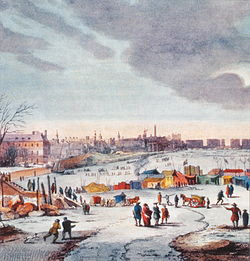

Winter Festival
Winter Festival adalah festival yang diadakan di negara yang memiliki iklim dingin yang panjang seperti Siberia, Skandinavia dan Kanada. Beberapa karnival yang diadakan dalam Winter Festival antara lain Winter Olympic Games, Quebec Winter Carnival di Kanada, Changbai Mountain International Winter Carinval di China, River Thames frost fairs di Inggris.
Winter Olympics Games adalah acara olahraga ragam yang diadakan tiap 4 tahun. Winter Olympics Games pertama diadakan di Chamonix, Prancis pada tahun 1924. Ada 5 jenis olahraga yang dipertandingkan saat itu yaitu bobsleigh, curling, ice hockey, nordic skiing dan skating.
Quebec Winter Festival adalah carnaval yang diadakan tiap tahun dari tahun 1955 dan pada tahun 2006, pengunjung Quebec Festival ini mencapai 1 juta yang menjadikannya festival terbesar. Quebec Winter Festival ini memiliki atraksi indoor dan outdoor, restoran dan tempat makan, turnamen dan juga Ice Palace yang dibangun tiap tahunnya.

River Thames frost fairs adalah festival yang diadakan di sungai Thames saat sungai Thames membeku. Pembekuan pertama terjadi pada AD 695 yang berlangsung selama 6 minggu. Pada tahun 1608, festival River Thames frost fairs ini pertama kali direkam. Festival River Thames ini juga terjadi pada tahun 1683-1684, 1715-1716, 1739-1740 dan 1789.
Pada tahun 1814, River Thames frost fairs diadakan dari tanggal 27 Desember 1813 sampai 7 Februari 1814. Pada 5 Februari 1814, es mulai retak dan mengakibatkan beberapa orang tenggelam. Festival River Thames frost fairs diadakan terakhir pada tahun itu.
